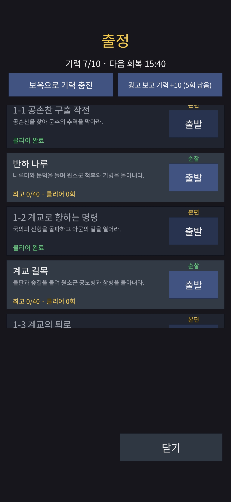
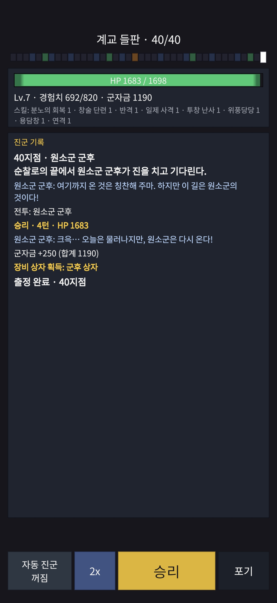

작업 목표
「조자룡이 간다」의 1장은 반하와 계교에서 조자룡이 문추, 안량 같은 유명 장수와 맞서는 이야기다. 그런데 성장 재료를 얻는 길이 같은 스테이지를 반복하는 것뿐이어서, 두 번째부터는 유명 장수가 그저 상자를 떨어뜨리는 보스가 됐다. 이번 작업의 목표는 이야기와 파밍을 분리하고, 분리한 뒤에도 플레이어가 “다음에 뭘 해야 할지”를 바로 알게 하는 것이었다.
작업 결과
출정 목록이 시나리오 모드와 순찰 모드가 번갈아 나오는 8개 행으로 바뀌었다. 시나리오 스테이지를 한 번 깨면 그 자리는 「클리어 완료」로 닫히고 짝이 되는 순찰이 열린다. 순찰은 몇 번이든 다시 나갈 수 있다.


시나리오 모드는 첫 클리어까지 한 번, 순찰은 무제한. 같은 목록에 번갈아 놓인다.
반하 강변 · 반하 나루 · 계교 길목 · 계교 들판. 각 40지점, 중간보스 하나와 군후 보스.
조사 → 계획 → 구현까지 AI 에이전트 작업 약 4시간. 테스트 1,606개, 에디터 테스트 331개 통과.
Galaxy A16에서 업데이트 화면부터 전리품 팝업까지 모두 확인했다. 세션 뒤 수정은 없었다.
시나리오 모드는 이야기, 순찰 모드는 전력
출정 목록은 「서장 → 반하 강변 → 1-1 → 반하 나루 → 1-2 → 계교 길목 → 1-3 → 계교 들판」처럼 시나리오 모드와 순찰 모드가 짝을 지어 번갈아 놓인다. 순찰은 짝이 되는 시나리오 스테이지를 깨야 열리고, 순찰에서 모은 군자금·돌파석·장비로 다음 시나리오 스테이지에 도전하는 흐름이다.
유명 장수와의 한 번뿐인 대결
- 60지점(서장은 30지점). 중간보스 둘과 마지막에 문추, 안량 같은 유명 장수.
- 첫 클리어로 끝난다. 다시 출발하려 하면 서버가 거부하고, 기력도 쓰지 않는다.
- 보스를 이기면 희귀 이상이 보장되는 장수 상자 하나. 특정 장수를 처음 이기면 전리품 유물과 유물 슬롯이 따라온다.
군자금과 장비를 모으는 반복 런
- 40지점. 20지점에 중간보스, 40지점에는 유명 장수가 아니라 「원소군 군후」 같은 직책으로 불리는 템플릿 적.
- 적의 강도는 다음 시나리오 스테이지의 일반 적과 중간보스를 그대로 빌려 쓴다. 순찰이 곧 다음 시나리오 스테이지의 예행연습이다.
- 마지막 보스가 군후 상자를 주고, 광고를 보면 2배. 광고 2배는 순찰에서만 제공한다.
무료는 양, 유료는 질
모드를 나누자 상자 공급도 다시 짜야 했다. 지금까지는 중간보스마다 상자를 주고 첫 클리어 상자까지 따로 있어서 한 런에 상자가 셋씩 쏟아졌다. 시나리오 모드가 한 번뿐이 되면 그 상자들은 사라지고, 순찰은 희귀 장비가 너무 쉽게 나오면 안 된다.
| 상자 | 어디서 | 등급 확률(일반 / 고급 / 희귀 / 전설) | 역할 |
|---|---|---|---|
| 장수 상자 | 시나리오 보스, 한 번 | 0 / 60 / 32 / 8% | 이야기의 보상. 희귀 이상 보장 |
| 군후 상자 | 순찰 보스, 반복 · 광고 2배 | 75 / 22 / 2.8 / 0.2% | 양으로 밀어 주는 무료 공급 |
| 유료 장비 상자 | 상점, 1개 80 · 10개 720 보옥 | 30 / 45 / 20 / 5% | 질로 차별화하는 유료 공급. 1-1을 깬 뒤에만 판매 |
| 첫 클리어 상자 | — | 폐지 | 시나리오 모드가 한 번뿐이 되어 역할이 장수 상자로 흡수됨 |
중간보스 보상은 상자 대신 추첨
중간보스를 이기면 상자가 아니라 「군자금 300」 또는 「돌파석 2」 중 하나가 반반으로 나온다. 기존의 행운 이벤트(대운·길운·불운을 뽑는 룰렛) 장치를 2개짜리 표로 넓혀 재사용했다. 군자금 쪽에는 런 중에 고른 “이벤트 군자금 증가” 특전이 그대로 붙는다.
상자 이름도 역할에 맞게
「보스 상자」「중간보스 상자」는 「장수 상자」「군후 상자」가 됐다. 내부 저장은 번호로만 하고 있어 데이터 이전 없이 이름만 바꿨고, 폐지한 상자의 번호는 다시 쓰지 않기로 했다. 확률 정보 화면은 데이터에서 자동으로 만들어지므로 탭이 알아서 정리됐다.
다음 시나리오 스테이지가 가능한지 서버가 먼저 알려 준다
시나리오 모드가 한 번뿐이 되면 “지금 도전해도 될까”가 중요해진다. 실패해도 잃는 건 기력뿐이지만, 순찰을 몇 번 더 돌고 와야 하는지는 알고 싶다. 그래서 시나리오 행마다 쉬움 · 가능 · 어려움 라벨을 달았다.
스테이지별 기준 전투력
스테이지 표에 “가능” 기준과 “쉬움” 기준 두 열을 둔다.
1,000계정 시뮬레이터
가상 플레이어 1,000명을 돌려 클리어율 30%·70%가 되는 전투력을 임시값으로 채운다.
출정 목록 응답에 등급
계급과 장비로 계산한 시작 전투력을 기준과 비교해 등급 하나를 실어 보낸다.
라벨만 표시
클라이언트는 계산하지 않는다. 계급이나 장비가 바뀌면 다음 조회에서 라벨이 바뀐다.
조사 한 번으로 계획이 정확해졌다
설계 문서를 쓴 뒤 바로 구현에 들어가지 않고, 읽기 전용 조사를 먼저 시켰다. 네 개의 에이전트가 런 테이블, 서버, 클라이언트, 시뮬레이터와 문서를 나눠 20분 안에 훑고 “설계대로 되는 것과 안 되는 것”을 보고했다. 보스 없는 순찰이 불가능하다는 것, 순찰 스테이지가 전투 테이블 버전을 올려 골든 벡터 156개를 다시 만들게 한다는 것, 중간보스 추첨이 데이터만으로는 안 되고 런 코드가 필요하다는 것이 모두 이 단계에서 나왔다.
상자와 상점
계정 테이블상자 개명, 확률 변경, 첫 클리어 상자 폐지, 유료 장비 상자와 상점 2행. 이벤트 표가 상자를 이름으로 가리켜서 한 커밋으로 묶었다.
중간보스 추첨
런 규칙이벤트 보상에 추첨 표를 지정하는 문법, 2행짜리 행운 표, 돌파석을 주는 새 런 효과. 추첨이 난수 순서를 바꾸므로 런 검증 벡터를 다시 만들었다.
순찰 스테이지 4개
전투 테이블스테이지에 모드 열과 기준 전투력 열을 추가하고, 40지점 순찰 레이아웃과 160개 이벤트, 군후의 진입·승리 대사를 넣었다. 골든 벡터는 156개에서 200개로 늘었다.
서버
GameServer클리어한 시나리오 스테이지의 출발 거부, 광고 2배의 순찰 전용화, 출정 목록 응답에 난이도 등급 필드 추가. 기존 클라이언트가 깨지지 않도록 필드는 뒤에 덧붙이기만 했다.
시뮬레이터와 클라이언트
Tools · Unity시뮬레이터가 모드와 해금 순서를 알게 하고 “시나리오 실패 → 순찰 n회 → 재도전” 정책을 넣었다. 로비 목록은 8행이 되어 스크롤 목록으로 바꾸고, 모드 라벨·클리어 완료·난이도 라벨을 달았다.
Galaxy A16에서 10개 항목을 차례로 확인했다
개발 서버에 새 빌드를 배포하고 플레이어 데이터를 초기화한 뒤, 사람이 폰으로 한 항목씩 확인하고 로그를 함께 남겼다. 시나리오 모드가 한 번뿐이라 순서가 중요했다. 놓친 항목은 서버 로그의 지급 기록으로 대신 증명했다.
| # | 확인한 것 | 결과 |
|---|---|---|
| 1 | 이전 버전 앱이 업데이트 화면에서 멈추고, 새 앱이 새 게스트로 들어감 | 통과 |
| 2 | 출정 목록 8행이 시나리오·순찰로 번갈아 놓이고, 잠긴 행이 해금 조건 스테이지 이름을 보여 줌 | 통과 |
| 3 | 서장 15지점 중간보스 뒤 「중간보스 보상: 군자금 300」, 클리어 뒤 상자는 장수 상자 하나뿐 | 통과 (로그로 확인) |
| 4 | 순찰 「반하 강변」 40지점까지, 군후의 대사, 클리어로 끝나고 군후 상자 지급, 다시 출발 가능 | 통과 |
| 5 | 광고 2배 버튼이 순찰 뒤에만 나오고 실제로 상자가 +1 됨. 시나리오 클리어 뒤에는 없음 | 통과 |
| 6 | 난이도 라벨: 전투력 1,710일 때 1-1 「어려움」, 4,581로 올린 뒤 모두 「쉬움」 | 양 끝만 확인 |
| 7 | 1-1을 깬 뒤에만 상점에 유료 장비 상자가 나오고, 1개·10개 구매와 개봉, 확률 정보 30/45/20/5% | 통과 |
| 8–10 | 유물 환급 카드의 등급·이름 표시, 1-3 첫 클리어의 전리품 로그 줄과 팝업 | 통과 |
알게 된 것
“끝”의 정의가 설계를 제약한다
런이 보스 승리로만 끝나는 규칙은 처음부터 있었지만, 보스 없는 모드를 설계할 때까지 아무도 그 규칙을 의식하지 않았다. 읽기 전용 조사가 이 충돌을 구현 전에 잡아 줬다.
이름을 바꾸는 비용은 저장 방식이 정한다
상자를 번호로 저장하고 있어서 개명은 데이터 이전 없이 끝났다. 대신 폐지한 번호는 영구히 비워 두기로 했다. 식별자를 이름이 아닌 번호로 저장해 둔 초기 결정이 여기서 값을 했다.
시뮬레이터는 모드를 모르면 조용히 틀린다
가상 플레이어가 “다음 스테이지”를 목록 순서로 고르고 있어서, 순찰 행이 끼어들면 모든 수치가 소리 없이 어긋날 뻔했다. 순찰 스테이지를 넣는 커밋에 시뮬레이터 수정을 같이 묶었다.
퍽 보너스처럼 작은 결정도 설명이 필요했다
중간보스 군자금을 기존 효과로 지급하면 이벤트 군자금 증가 특전이 자동으로 붙는다. 300이냐 360이냐의 차이지만, 그 특전을 고른 플레이어의 기대를 지키는 쪽으로 정했다. 작은 선택일수록 이유를 적어 두는 편이 나중에 덜 헷갈린다.
밸런싱은 버티컬 슬라이스 뒤로
난이도 기준값과 “1-1을 몇 런 안에 깬다”는 목표를 지금 정밀하게 잡아도 다음 파트에서 다시 바뀐다. 임시값으로 두고 표시 기능만 검증한 것이 범위를 줄였다.
병합 코드는 폰에서 본 빌드와 같아야 한다
세션에서 나온 개선 요청(상자 개봉 끝에 환급 총액 요약, 수정된 대사 검토)은 이번에 넣지 않고 다음 파트의 첫 항목으로 넘겼다. 검증한 빌드와 병합한 코드가 같다는 원칙을 지키는 비용이 더 싸다.
결정은 사람이, 조사와 구현은 AI 에이전트가
이번 파트는 설계 대화 → 읽기 전용 조사 → 계획 → 승인 → 구현 → 배포 → 실기기 검증 순서로 진행했다. 조사 보고서의 질문 17개에는 모두 AI의 권고안이 달려 왔고, 사람은 그중 실제로 갈리는 네 가지(순찰 보스 방식, 광고 2배 범위, 특전 보너스 적용, 개발 서버 데이터 초기화)만 결정했다.
AI 에이전트가 맡은 일
- 병렬 에이전트 4개로 읽기 전용 조사와 비용 추정
- 그룹별 계획, 결정 기록 11건과 문서 갱신
- 테이블·서버·클라이언트·시뮬레이터 구현과 테스트 1,606개
- 골든 벡터와 런 벡터 재생성, Android 빌드
- 개발 서버 스모크 테스트와 로그 점검
- 풀 리퀘스트 생성과 CI 확인
사람이 직접 한 일
- 모드 분리와 상자 재편의 방향, 핵심 결정 4개
- 개발 서버 재배포를 한 단계씩 실행(이미지 빌드, 기동, 플레이어 초기화, 원격 설정)
- Galaxy A16 세션 10개 항목과 로그 캡처
- 병합과 문서 사본 교체
이야기는 한 번, 성장은 반복으로
출정을 둘로 나누자 각 모드가 할 일이 분명해졌다. 시나리오 모드는 유명 장수와의 사건이고, 순찰은 그 사건을 준비하는 시간이다. 상자는 “무료는 양, 유료는 질”로 정리됐고, 플레이어는 출정 목록만 보고도 다음에 무엇을 할지 안다.
이번 파트의 진행 순서
설계 대화: 시나리오 · 순찰 모드 분리, 상자 재편
↓
읽기 전용 조사 (에이전트 4개, 20분)
↓
계획과 질문 17개 → 사람이 4개 결정
↓
구현 16커밋 (약 4시간)
↓
개발 서버 재배포 · 스모크 · 로그 점검
↓
Galaxy A16 세션 10항목 → 같은 날 병합조사가 정확하면 구현은 빠르다. 이번 파트의 시간 대부분은 구현이 아니라 결정과 검증에 쓰였다.
3줄 요약
- 출정을 한 번뿐인 시나리오 모드와 반복하는 순찰 모드로 나누고, 순찰은 다음 시나리오 스테이지의 적을 빌려 쓰는 예행연습으로 설계했다.
- 상자를 장수 상자(질 보장) · 군후 상자(양) · 유료 장비 상자(질)로 재편하고, 중간보스 보상은 군자금·돌파석 추첨으로, 시나리오 행에는 쉬움·가능·어려움 라벨을 달았다.
- 읽기 전용 조사로 설계의 충돌을 먼저 찾은 덕에 AI 에이전트 구현이 약 4시간에 끝났고, 실기기 10개 항목을 확인해 같은 날 병합했다.
다음 작업
성장 축을 「계급」에서 「명성」으로
다음 파트조자룡은 이야기 시점에 이미 장수라 보졸부터 올라가는 계급은 어색했다. 수련으로 체력·무예·방어를 단련해 명성을 쌓고 칭호를 얻는 구조로 바꾼다. 세션에서 나온 개선 두 가지(상자 개봉 끝의 환급 총액 요약, 수정된 대사 검토)가 첫 항목이다.
1장 버티컬 슬라이스 마무리
그 다음적 장수의 유물, 2·3장 전리품 배치, 유물 아트를 붙이고 난이도 기준값과 상자 확률을 시뮬레이터로 다시 잡는다.
클로즈 베타 준비
CBT 게이트iPhone 전체 세션, 개발 서버 데이터베이스 백업, 릴리스 빌드와 내부 테스트 트랙.